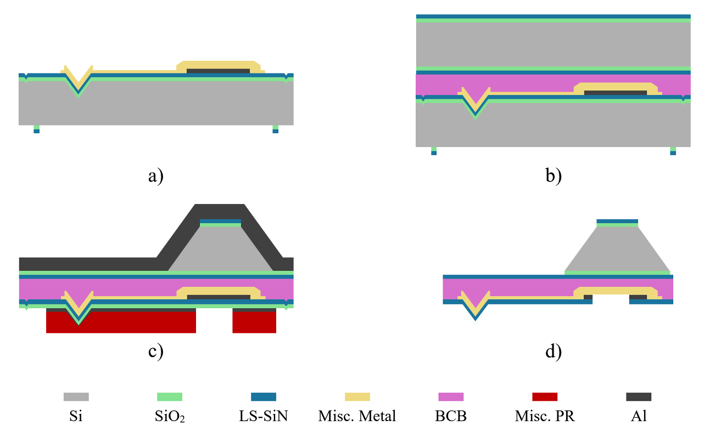
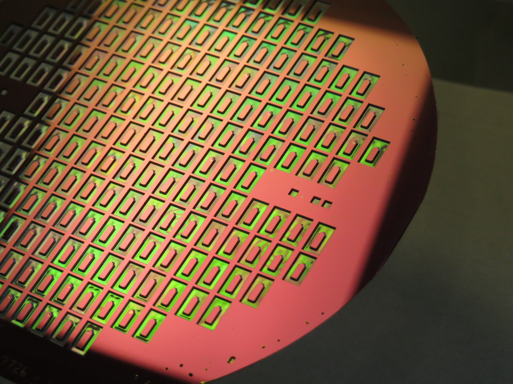
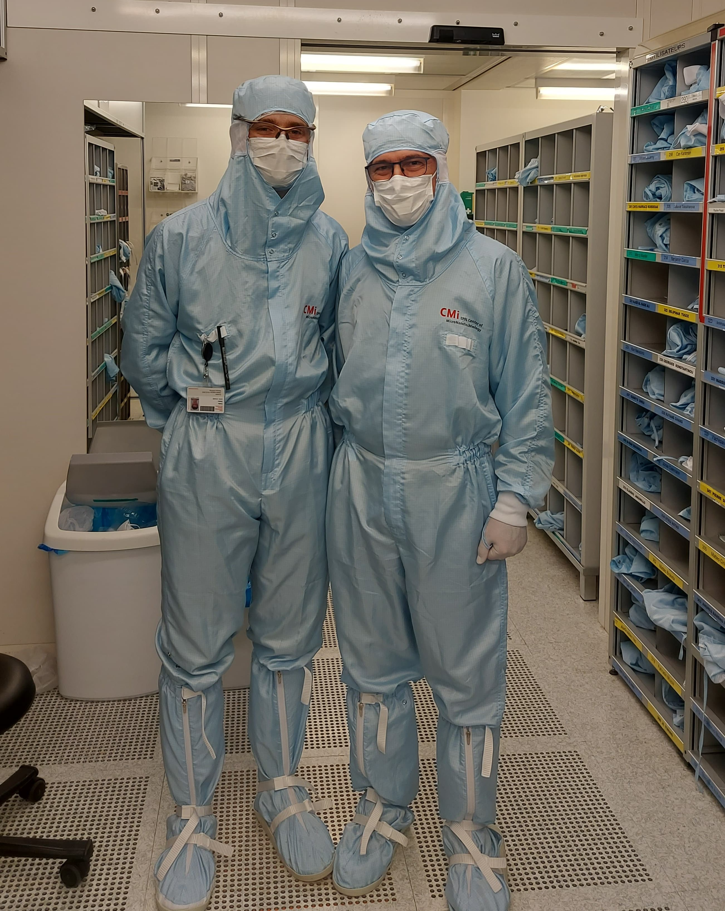
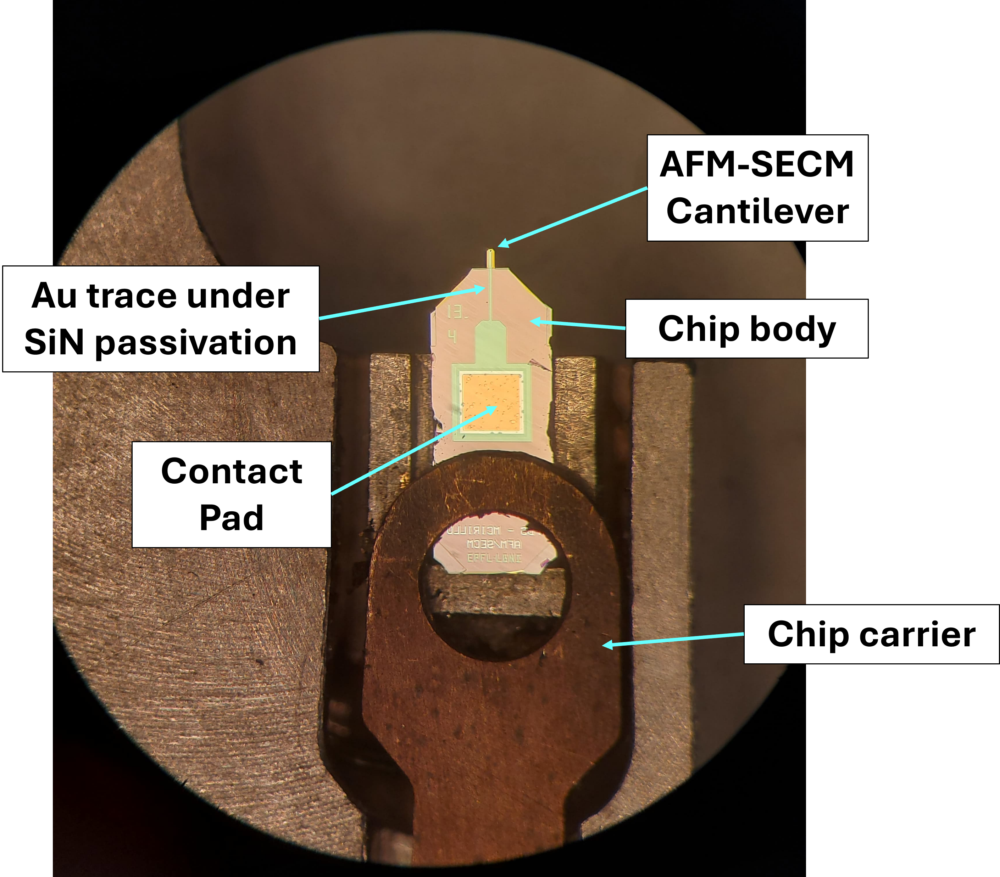
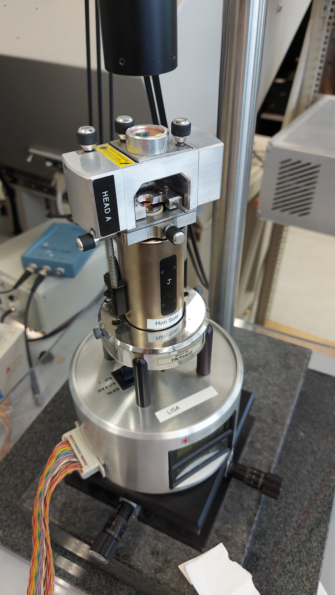

EPFL - LBNI Group
Fabrication of Trilayer AFM Cantilevers for Scanning Electrochemical Microscopy Applications
Semester project on the fabrication of trilayer AFM cantilevers for SECM applications.Designed and fabricated the devices in cleanroom, experimentally demonstrating novel scanning probe capabilities that resulted in a collaboration with leading industry partners.






Context
AFM has evolved far beyond simple topographic imaging, and combining it with electrochemical sensing opens a way to map local surface reactivity and morphology at the same time. The goal of this semester project was to extend the existing trilayer cantilever platform at LBNI into a prototype for AFM-SECM, where an insulated metal trace could carry a signal from the chip body to the tip apex.
What I built
I developed a prototyping platform for trilayer AFM cantilevers with a buried conductive trace, based on the established SiN–BCB–SiN architecture. The design aimed to preserve the mechanical behavior of the cantilever while integrating an insulated metal path that could later be opened at the tip to form a local electrochemical electrode.
The work included device design, a full cleanroom fabrication run, and characterization of the completed cantilevers. The design was guided by the requirement to keep the devices compatible with standard AFM instrumentation while making the structure suitable for future AFM-SECM operation.
Fabrication and process development
The fabrication process flow was based on the existing trilayer platform and extended with two key additions: a metal trace embedded in the stack and a contact pad exposed on the chip body for later electrical access. The trace was designed with a thicker region near the tip and a thinner, softer section along the cantilever body, so that the structure could remain mechanically compatible with contact-mode AFM while still providing a usable conductive path.
I worked through the full process chain in CMi, including alignment-transfer steps, metal-trace formation, BCB bonding, wafer thinning and chip-body shaping, and final device patterning and release. Gold was selected for the completed fabrication run because it was the most practical option to validate within the project timeline, whereas platinum was explored but ultimately abandoned because of severe processing difficulties.
Characterization and outcome
The completed gold-based devices achieved a very high fabrication yield, with 191 out of 197 designed devices completed defect-free. Mechanical characterization by thermal tuning on two independent setups showed resonance frequencies from roughly 9 to 49 kHz and stiffness values from about 0.25 to 4.1 N/m, in good agreement with the analytical Euler-Bernoulli model.
The project therefore demonstrated that a gold conductive trace could be integrated into the trilayer cantilever architecture without losing AFM compatibility. It also exposed the main remaining challenge for true AFM-SECM operation: opening the tip to expose the buried metal and validating the electrochemical response in liquid, which remains the next step for the platform. The prototypes also sparked a collaboration with an industry partner in the AFM instrumentation sector, reinforcing the relevance of the platform beyond the academic setting.
Key takeaways
- Built a functional prototyping platform for AFM-SECM cantilevers based on the LBNI trilayer architecture.
- Integrated an insulated buried metal trace while maintaining the mechanical requirements of contact-mode AFM.
- Completed a full cleanroom fabrication run and validated the resulting devices through mechanical characterization.
- Established a strong basis for future work on electrochemical tip opening, electrolyte testing, and further process refinement.